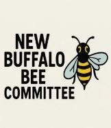
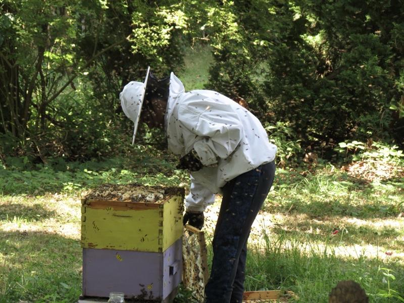
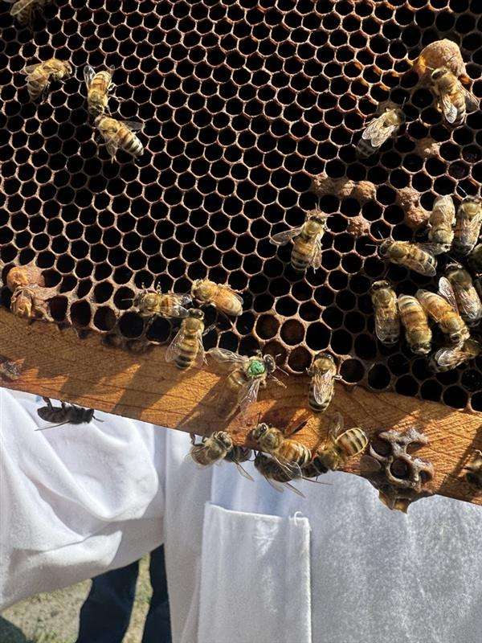
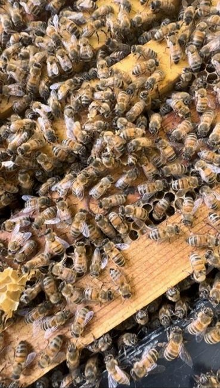

Welcome
Welcome to the New Buffalo Bee Committee — a neighborhood group focused on responsible beekeeping, pollinator education, and community support. Explore the site to learn about tools, reading, and how to get involved.
Community posts
Share photos, ask questions, or post updates. Replies appear under the post.
Contact & Meetings
Meetings: Second Tuesday of each month, 6:30 PM — New Buffalo Community Center (check our updates).
Contact: info@newbuffalobee.org